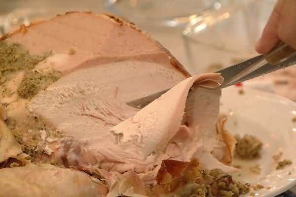

ObsSlice: A Timed Automata Slicer based on Observers |
|
|
 Picture taken from http://FreeFoto.com |
ObsSlice is an optimization tool suited for the verification of networks of timed automata using virtual observers. It discovers the set of modeling elements that can be safely ignored at each location of the observer by synthesizing behavioral dependence information among components. ObsSlice is fed with a network of timed automata and generates a transformed network which is equivalent to the original one up to branching-time observation. Experiments suggest that the approach may lead to significant time and space savings during verification phase as well as reductions in the length of counterexamples. ObsSlice receives a network of KRONOS family compliant timed automata and generates sliced models for KRONOS, OPENKRONOS and UPPAAL. |